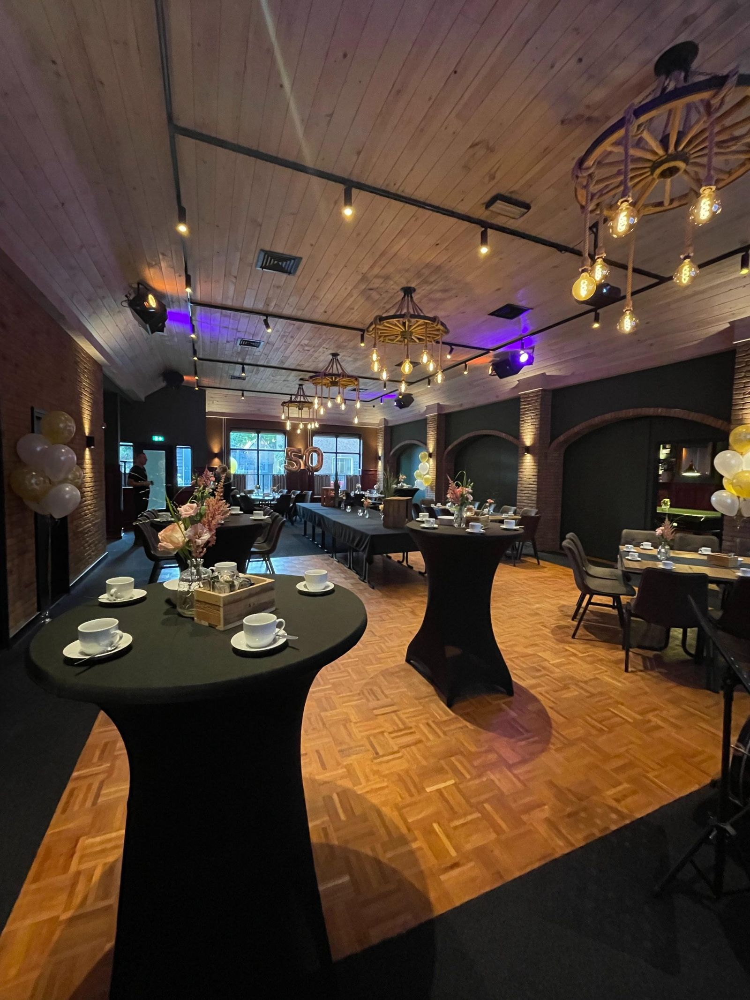
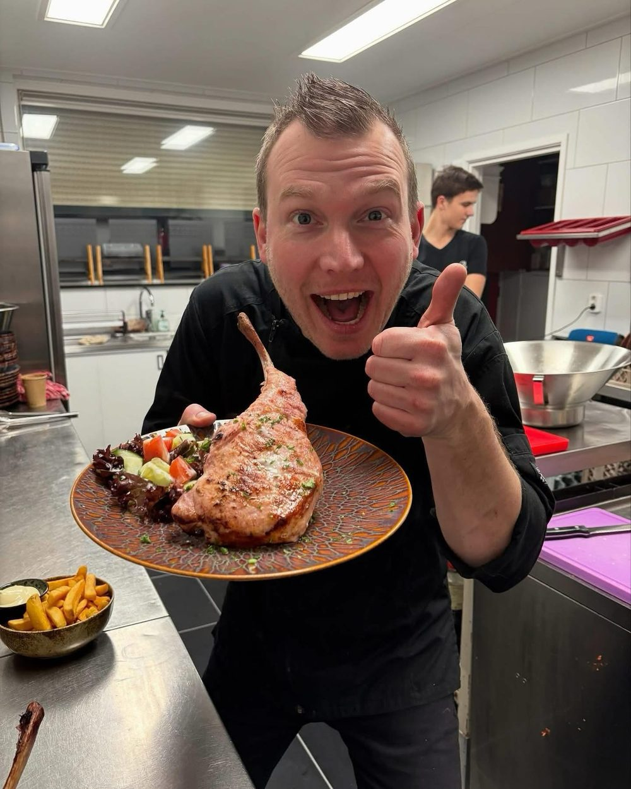
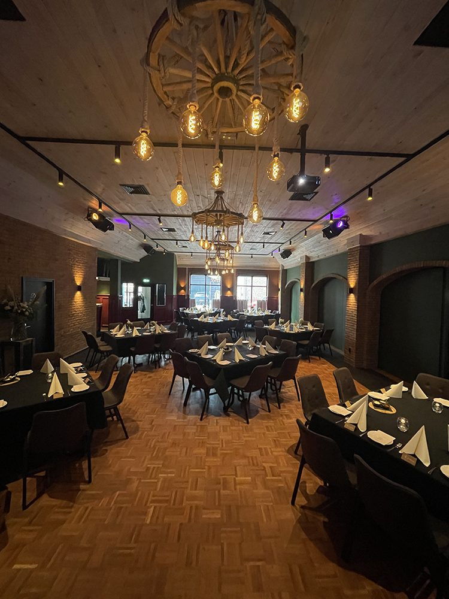
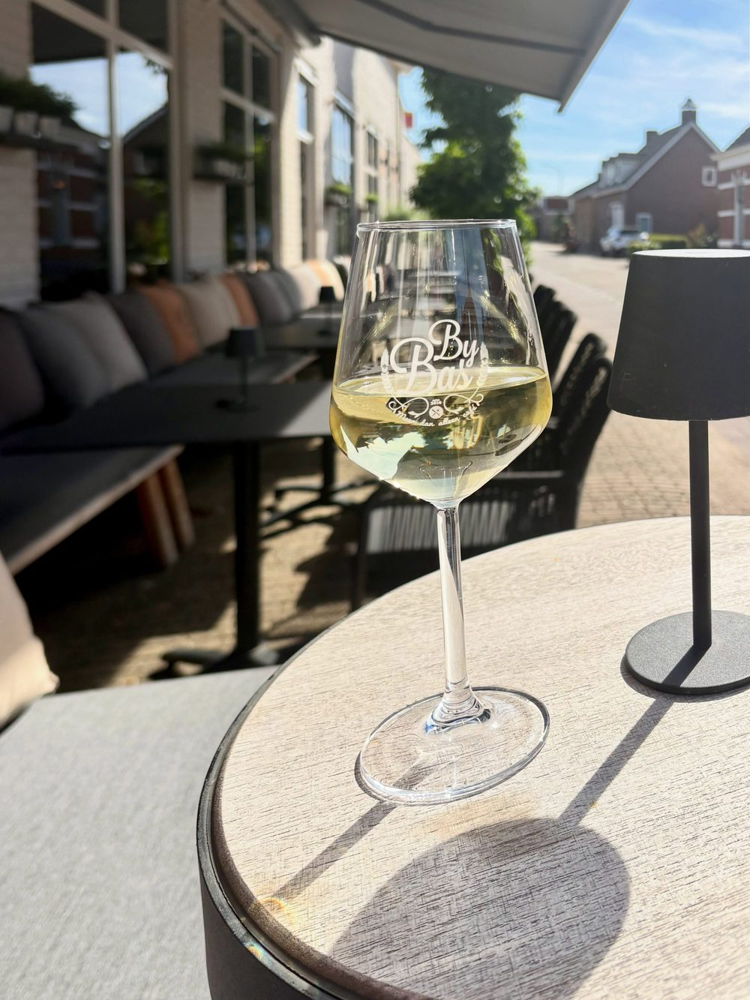
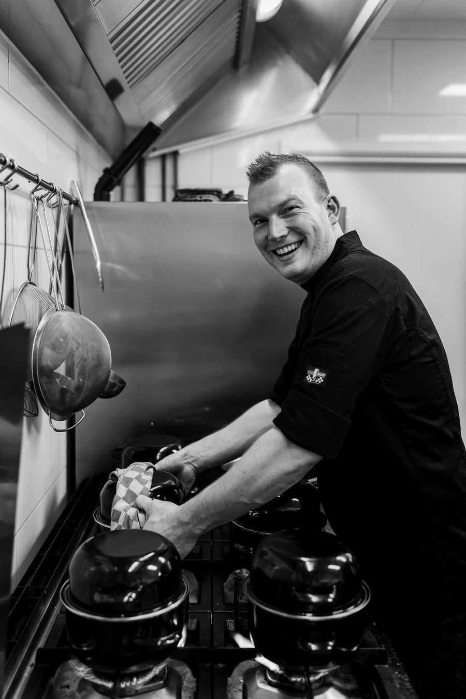

Meer dan alleen café
Het dorpscafé in het centrum van Wagenberg. Voor een drankje, een etentje van donderdag t/m zondag of een feest tot 300 personen.
Keuken open: donderdag t/m zondag vanaf 17.00 uur. Het café is 6 dagen per week open.

Lekker eten, betaalbaar geprijsd
Van donderdag t/m zondag is de keuken open vanaf 17.00 uur. Op de kaart staan onder andere biefstuk, zalmfilet, spare ribs en de tapasschotel "Bij Bas". Alle hoofdgerechten komen met frites en salade.
Dorpshap van de maand
€ 17,50Oktober: huisgemaakt stoofvlees met als basis Hertog Jan bokbier. Geserveerd met frites, salade en Zaanse mayonaise.
Iedere maand een ander gerecht. De huidige dorpshap staat ook op ons krijtbord.Om zeker te zijn van een plekje raden we aan even te reserveren. Ook met een grotere groep vinden we altijd een passende oplossing.
De kaart
Alle hoofdgerechten worden geserveerd met frites en salade.
- Brood met smeersels€ 7,5Wit en bruin brood met aioli, tapenade en kruidenboter
- Italiaanse Pomodori soep€ 7Huisgemaakte tomatensoep (vegetarisch)
- Thaise kippensoep€ 8Huisgemaakte kippensoep met kokosmelk, rode peper en citroengras
- Carpaccio€ 12,5Rundercarpaccio met sla, geroosterde tuinbonen, Grana Padano en truffelmayo
- Kip salade€ 12Salade met kipreepjes, tomaat, komkommer en frisse dressing
- Vis salade€ 13,5Salade met gerookte zalm, garnalen, rode ui, tomaat, komkommer en cocktaildressing
- Geitenkaas salade€ 13Salade met warme geitenkaas, honing en noten
- Knoflook garnalen€ 12,5Pannetje met in olie gegaarde garnalen, knoflook en chiliflakes
- Tapas schotel "Bij Bas"€ 14 p.p.Combinatie van warme en koude gerechten met een mandje brood. Vanaf 2 personen
- Salades zijn ook te bestellen als grote salade, meerprijs € 4,5.
- Steak€ 21Kogelbiefstuk met truffeljus of pepersaus
- Surf & Turf€ 25,5Kogelbiefstuk met truffeljus of pepersaus en 2 gebakken gamba's met knoflookdip
- Zalmfilet€ 21,5Op de huid gebakken zalmfilet met hollandaisesaus en zeekraal
- Spare ribs€ 23Ribs afgelakt met sweet & spicy BBQ, met knoflook- en chilisaus
- Classic burger€ 18,5Domburger runderburger met sla, tomaat, rode ui, emmentaler, augurk en classic burgersaus
- Souvlakispies€ 19Grieks gekruide varkenshaasspies met tzatziki. Voor de kenners ook de "varkenshaas oosters"
- Gamba la bamba€ 19,5Gebakken gepelde gamba's in chiliroomsaus
- Kip piri-piri€ 18Kipfilet met ui, paprika en piri-piri saus (ook vegetarisch te bestellen)
- Kipsaté€ 17,5Twee goed gevulde stokken kipsaté met satésaus
- Dorpshap€ 17,5Iedere maand een ander gerecht, met frites en salade
- Dame blanche€ 6,5Coupe vanille-ijs met warme chocoladesaus en slagroom
- Crème brûlée€ 9,5Huisgemaakte crème brûlée met rood fruit en slagroom
- Choco & caramel€ 10Chocolade lavacake met stroopwafelijs, macaron, caramelsaus en slagroom
- Sgroppino€ 8 per glasItaliaanse cocktail met wodka, citroensorbetijs en prosecco. € 35 per liter
- Cello proeverij€ 13,5Drie soorten 'cello's' met een bolletje sorbetijs
- Kaasplankje€ 14Verschillende kazen, vijgenbrood en noten
- Zin in een speciale koffie? Vraag naar onze koffiekaart.
- Kindersoepje€ 5Klein kommetje tomatensoep
- Friet met frikandel, kroket of nuggets€ 7Met mayonaise, appelmoes en een lolly
- Kids pizza€ 7Pizza op kinderformaat
- Poffertjes€ 6Met poedersuiker
- Kinderijs€ 5,5Kinderbeker met vanille-ijs, slagroom en Smarties, met een kleine verrassing
Heeft u een allergie? Bespreek het met een van onze medewerkers.
ReserverenFeesten Bij Bas
Verjaardag, bruiloft of koffietafel: in onze eigen feestzaal is plek voor een groot gezelschap, en met een kleinere groep kunt u net zo goed terecht. We denken graag met u mee.

Binnenkort Bij Bas
Zet de data alvast in je agenda.
Dun Opmaat (11/11)
Gezellig aanschuiven Bij Bas.
Vogeltentoonstelling
De E.W.V.V. Vogeltentoonstelling Bij Bas.
Mosselavond
Reserveren kan al.
Kerstavond: All you need is Bas
Welkomstcocktail, amuse, 4-gangen kerstdiner (vis, vlees of vegetarisch), live muziek en entertainment. € 77,50 p.p., aanvang 18.30 uur.
Let op: van 28 december t/m 3 januari zijn we gesloten.

Het café en ons terras
Een gezellig dorpscafé waar u kunt biljarten, darten of gewoon een praatje maken. Met een kopje koffie, een pilsje, een speciaalbiertje of een mooi wijntje.
In de zomer zit u met mooi weer op ons terras, met 26 plaatsen langs de doorgaande weg. Er is altijd wel wat te zien, of iemand om naar te zwaaien.
Ons kent ons
Bij Bas ligt in het centrum van Wagenberg, een dorp van zo'n 2200 inwoners waar iedereen elkaar kent. Sinds 2016 is het café voor jong en oud een ontmoetingsplek in het dorp.
Door de huiselijke sfeer voelt iedereen zich hier meteen thuis. Of u nu komt voor een drankje, een hapje of een feestje.
"Bas en zijn team proberen u het zo huiselijk en gezellig mogelijk te maken."Bas Mulder, eigenaar

Reserveren
Een tafel voor het diner of een feest bespreken? Laat het ons weten, of bel of app ons even.
Geopend vanaf
076 593 15 66